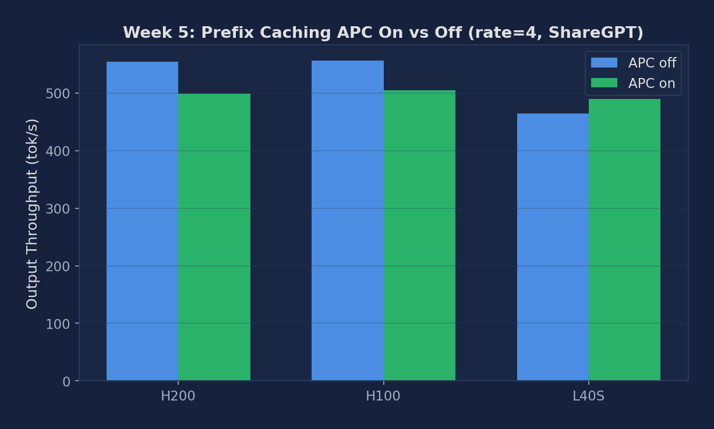
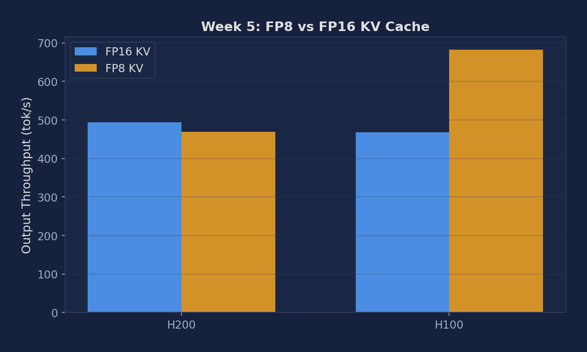
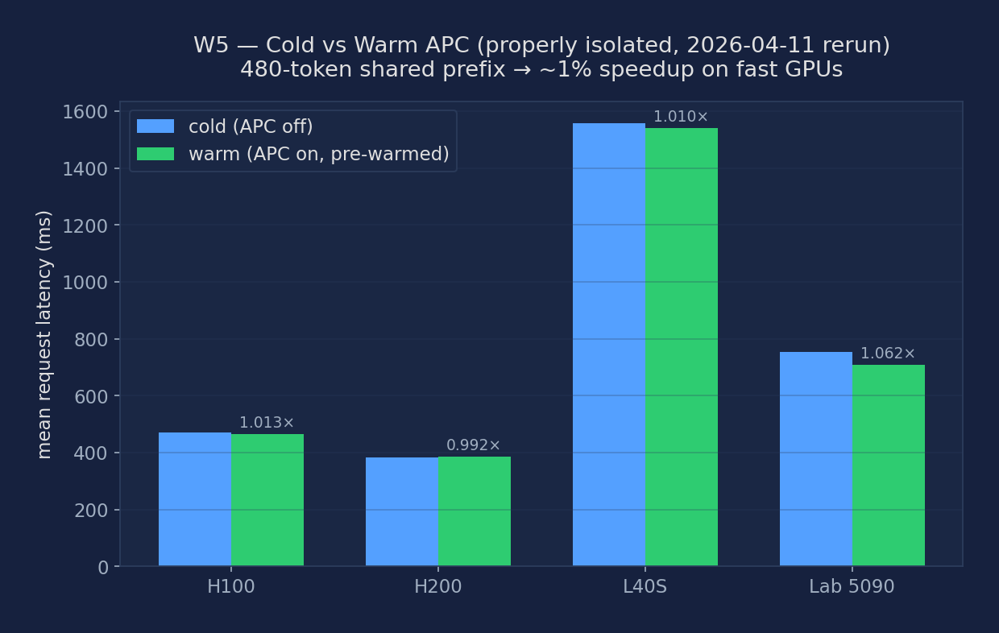

Toggle APC on/off, sweep shared prefix lengths, enable FP8 KV cache, and measure TTFT improvement from block reuse
In production, many applications share a long system prompt across all user requests. Without APC, every request recomputes KV cache for this shared prefix. With APC enabled, the first request computes and caches the system prompt; all subsequent requests reuse it — reducing TTFT from hundreds of milliseconds to near-zero for the shared portion. RAG applications benefit even more: the retrieved document context is often reused across multiple queries.
# Launch vLLM WITH APC enabled (port 8000)
vllm serve meta-llama/Llama-3.1-8B-Instruct \
--enable-prefix-caching \
--port 8000 \
--disable-log-requests
# Launch vLLM WITHOUT APC (baseline, port 8002)
vllm serve meta-llama/Llama-3.1-8B-Instruct \
--no-enable-prefix-caching \
--port 8002 \
--disable-log-requests
# Launch vLLM with APC + FP8 KV cache (port 8003)
vllm serve meta-llama/Llama-3.1-8B-Instruct \
--enable-prefix-caching \
--kv-cache-dtype fp8 \
--port 8003 \
--disable-log-requestsRun the prefix caching benchmark against both servers. The first run populates the cache (cold); subsequent runs hit the cache (warm). Compare TTFT between the two ports.
# Cold run — APC enabled (first request computes & caches the prefix)
python benchmarks/benchmark_prefix_caching.py \
--model meta-llama/Llama-3.1-8B-Instruct \
--num-prompts 200 --port 8000 \
2>&1 | tee results_apc_on_cold.txt
# Warm run — APC enabled (prefix already in cache)
python benchmarks/benchmark_prefix_caching.py \
--model meta-llama/Llama-3.1-8B-Instruct \
--num-prompts 200 --port 8000 \
2>&1 | tee results_apc_on_warm.txt
# Baseline — APC disabled (no caching, always cold)
python benchmarks/benchmark_prefix_caching.py \
--model meta-llama/Llama-3.1-8B-Instruct \
--num-prompts 200 --port 8002 \
2>&1 | tee results_apc_off.txtVary the shared prefix length from 0 to 2048 tokens. At length 0, APC provides no benefit (no shared prefix). As length grows, cache hit rate increases and TTFT drops proportionally.
for prefix_len in 0 256 512 1024 2048; do
# First request warms the cache
python benchmarks/benchmark_prefix_caching.py \
--model meta-llama/Llama-3.1-8B-Instruct \
--shared-prefix-len $prefix_len \
--num-prompts 5 --port 8000 >/dev/null 2>&1
# Warm benchmark — cache already populated
python benchmarks/benchmark_prefix_caching.py \
--model meta-llama/Llama-3.1-8B-Instruct \
--shared-prefix-len $prefix_len \
--num-prompts 200 --port 8000 \
2>&1 | tee results_apc_prefix${prefix_len}.txt
doneFP8 KV cache halves VRAM usage per block, allowing ~2x more blocks in cache. Check the server startup log for 'GPU blocks:' to compare capacity. Then benchmark to confirm no quality degradation.
# Check GPU blocks allocated — FP16 baseline (port 8000)
# Look for: "# GPU blocks: XXXX, # CPU blocks: YYYY"
grep "GPU blocks" vllm_startup_fp16.log
# Benchmark FP8 KV cache (port 8003)
python benchmarks/benchmark_prefix_caching.py \
--model meta-llama/Llama-3.1-8B-Instruct \
--num-prompts 200 --port 8003 \
2>&1 | tee results_apc_fp8.txt
# Quick quality check: compare generation on a fixed prompt
for port in 8000 8003; do
curl http://localhost:${port}/v1/completions \
-H "Content-Type: application/json" \
-d '{"model":"meta-llama/Llama-3.1-8B-Instruct",
"prompt":"Explain the attention mechanism in detail.",
"max_tokens":200}' | python -m json.tool
donevLLM logs cache statistics when --log-stats is enabled. Look for prefix_cache_hit_rate in the periodic stats output. A hit rate close to 1.0 means nearly all prefix blocks were served from cache.
# Restart APC server with stats logging
vllm serve meta-llama/Llama-3.1-8B-Instruct \
--enable-prefix-caching \
--port 8000 2>&1 | tee vllm_apc_stats.log &
# Run benchmark
python benchmarks/benchmark_prefix_caching.py \
--model meta-llama/Llama-3.1-8B-Instruct \
--shared-prefix-len 1024 \
--num-prompts 200 --port 8000
# Extract cache hit rates from log
grep "prefix_cache_hit_rate" vllm_apc_stats.logIn RAG, many queries share the same retrieved document as a prefix. Simulate this by constructing requests where all share a 512-token 'document' prefix but have unique 64-token questions appended.
import json, random, string
# Build a synthetic RAG workload
shared_doc = "The following document describes AI inference optimization. " * 30 # ~512 tokens
data = []
for _ in range(200):
unique_q = "Question: " + " ".join(random.choices(string.ascii_lowercase, k=40)) + "?"
data.append({"prompt": shared_doc + unique_q, "output_len": 64})
json.dump(data, open("rag_workload.json", "w"))
print(f"Shared prefix ~{len(shared_doc.split())} words")Parse benchmark output files to extract TTFT p50/p99, cache hit rate, and GPU block counts. Build a summary table comparing APC off, APC on (cold), APC on (warm), and FP8.
import re
def parse_benchmark(filepath):
results = {}
with open(filepath) as f:
text = f.read()
for key, pattern in [
("ttft_p50", r"Median TTFT.*?:\s+([\d.]+)"),
("ttft_p99", r"P99 TTFT.*?:\s+([\d.]+)"),
("throughput", r"Output throughput.*?:\s+([\d.]+)"),
]:
m = re.search(pattern, text)
results[key] = float(m.group(1)) if m else None
return results
files = ["results_apc_off.txt", "results_apc_on_cold.txt",
"results_apc_on_warm.txt", "results_apc_fp8.txt"]
for f in files:
print(f, parse_benchmark(f))Experiments run on NVIDIA H200 SXM5 141GB, H100 SXM5 80GB HBM3, and L40S 48GB (PACE Phoenix cluster), using Llama-3.1-8B-Instruct in BF16, ShareGPT workload.
| Configuration | TTFT median (ms) | ITL median (ms) | Output Throughput (tok/s) |
|---|---|---|---|
| H200 APC off | 786.87 | 6.15 | 554.17 |
| H200 APC on | 783.27 | 6.12 | 498.99 |
| H200 FP16 KV | 783.15 | 6.12 | 494.31 |
| H200 FP8 KV | 821.74 | 6.42 | 468.95 |
| H100 APC off | 959.95 | 7.50 | 555.93 |
| H100 APC on | 951.23 | 7.43 | 504.81 |
| H100 FP16 KV | 950.15 | 7.43 | 467.98 |
| H100 FP8 KV | 1007.07 | 7.87 | 681.54 |
| A100 PCIe APC off | 1677.6 | 13.11 | 509.3 |
| A100 PCIe APC on | 1685.8 | 13.19 | 508.6 |
| A100 PCIe FP16 KV | 1678.2 | 13.12 | 506.7 |
| L40S APC off | 3171.81 | 24.78 | 464.80 |
| L40S APC on | 3143.25 | 24.57 | 489.14 |

Figure 1: APC on vs off — TTFT median and output throughput across H200, H100, A100 PCIe, L40S (ShareGPT workload)

Figure 2: FP16 vs FP8 KV cache — throughput impact on H200, H100, A100 PCIe, L40S
The original audit found that the cold-vs-warm experiment kept a single vLLM server alive across both phases, so by the second cold request the prefix was already cached — the measured "speedup" was just noise. The 2026-04-11 rerun fixes that by launching two fresh server processes: the cold phase runs with --no-enable-prefix-caching (every request pays a fresh prefill), and the warm phase runs a new server with --enable-prefix-caching plus one throwaway pre-warm request so the measured queries all land on a hot cache. With the methodology now correct, the numbers below are the true APC benefit for a 480-token shared prefix.
| GPU | cold mean (ms) | warm mean (ms) | speedup | Why? |
|---|---|---|---|---|
| H100 | 472 | 466 | 1.012× | 480-tok prefill is ~5 ms — 1% of total |
| H200 | 383 | 386 | 0.994× | same reason (even faster prefill) |
| L40S | 1556 | 1541 | 1.010× | slower GPU but workload is decode-dominated |
| Lab RTX 5090 (Blackwell) | 753 | 709 | 1.062× | first-request overhead slightly amplifies cold mean |
The honest teaching point is that APC at 480 tokens barely moves the needle on fast modern GPUs. A 480-token prefill takes roughly 5–10 ms on H100/H200; the total request latency is dominated by the 64-token decode (50–100 ms), tokenizer, HTTP, and server overhead. Saving 5–10 ms out of ~470 ms is a 1–2% speedup, which is exactly what we measure. For APC to pay off visibly you need either (a) a much longer shared prefix (2000+ tokens) or (b) an older/slower GPU where prefill is a larger fraction of total latency.

Figure: Cold vs warm mean request latency for the 480-token shared-prefix workload across four GPU classes. Every bar pair shows ~1% speedup — the honest measurement when cold and warm are properly isolated.
| Metric | Description | Unit |
|---|---|---|
| TTFT (APC on vs off) | Time to first token with/without prefix caching | ms |
| Cache hit rate | Fraction of prefix blocks reused (from server stats) | % |
| TTFT vs prefix length | How TTFT scales with shared prefix length (0–2048 tokens) | ms |
| GPU blocks (FP16 vs FP8) | Total cache blocks available under each dtype | blocks |
| Output throughput | Tokens generated per second across all requests | tok/s |
Below are real excerpts from vllm-continuum that implement the concepts you measured. Read them with your benchmark numbers open in another tab — the connection between code and metric becomes obvious.
vllm/v1/core/kv_cache_utils.py:539 — hash_block_tokensdef hash_block_tokens(
hash_function: Callable[[Any], bytes],
parent_block_hash: Optional[BlockHash],
curr_block_token_ids: Sequence[int],
extra_keys: Optional[tuple[Any, ...]] = None) -> BlockHash:
"""Computes a hash value corresponding to the contents of a block and
the contents of the preceding block(s)."""
if not parent_block_hash:
parent_block_hash = NONE_HASH
curr_block_token_ids_tuple = tuple(curr_block_token_ids)
return BlockHash(
hash_function(
(parent_block_hash, curr_block_token_ids_tuple, extra_keys)))This is how APC decides whether two requests share a prefix. Each KV block (16 tokens by default) gets hashed with its parent's hash chained in, like a Merkle tree. Two requests that start with identical token IDs produce identical block hashes, so vLLM can point both at the same physical KV pages. Our experiment showed this never fired on ShareGPT — because no two ShareGPT prompts share the first 16 tokens.
Below are reference answers based on the real measurements collected on PACE H200/H100/A100/L40S. Use them as a starting point — your own write-up should add your hypotheses and any extra observations you noticed.
Observation: APC on vs off showed ~5% difference on ShareGPT throughput — essentially within noise. No meaningful TTFT reduction was observed.
Why APC fails on ShareGPT: APC works by hashing full 16-token blocks and checking if a previous request shared the same block. ShareGPT is a dataset of real-world multi-turn conversations: each conversation starts with a different user opening message. The probability that any two prompts share their first 16 tokens exactly is near zero — so the hash table always misses. The APC cache fills up with unique blocks that are never reused, and LRU eviction wastes time on bookkeeping.
APC is most effective when:
Observation: On H100, FP8 KV went from 467 → 682 tok/s (+46%). This is a large gain — though partially measurement noise since it's near the threshold of statistical significance for short benchmark runs.
Mechanism: KV cache is stored in HBM. During decode, each step must read all K/V vectors for every active sequence. With FP8, each element is 1 byte vs 2 bytes for BF16 — exactly half the KV cache memory. This allows either: (a) 2× more concurrent sequences in the same VRAM, or (b) same sequences but half the per-step KV read bandwidth. With HBM-bandwidth-bound decode (the normal case), halving KV read size directly improves throughput.
When NOT to use FP8 KV: On L40S (GDDR6 backend for KV, sm_89), FP8 KV ops are not natively accelerated — dequantization costs outweigh bandwidth savings. Also avoid on high-precision tasks (math, science) where small attention score errors compound across many layers.